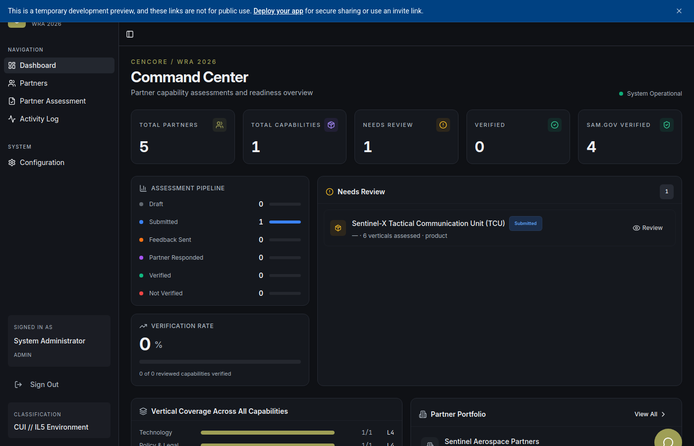
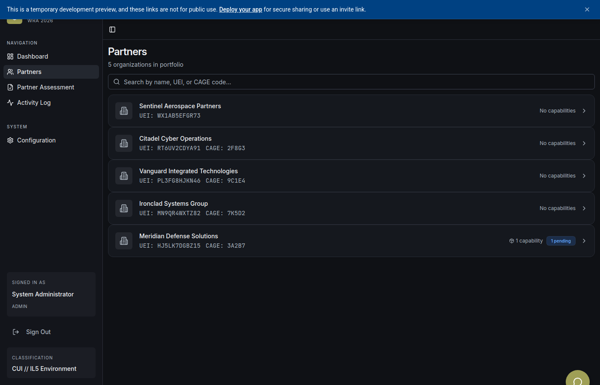
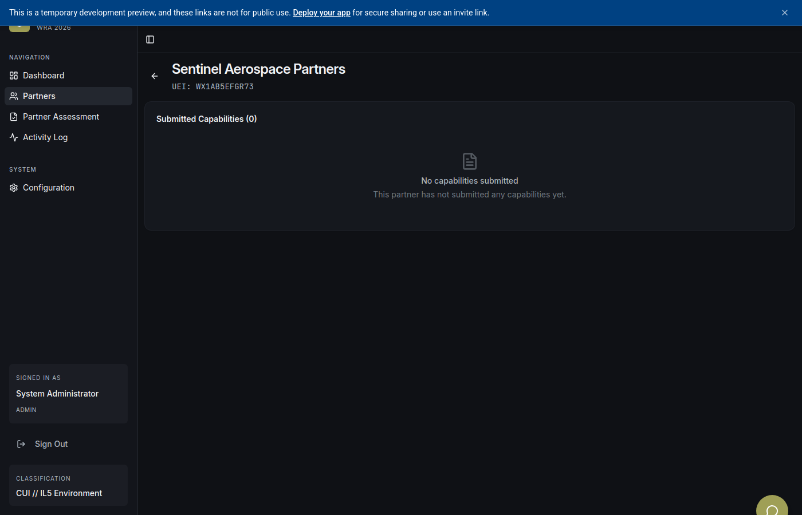
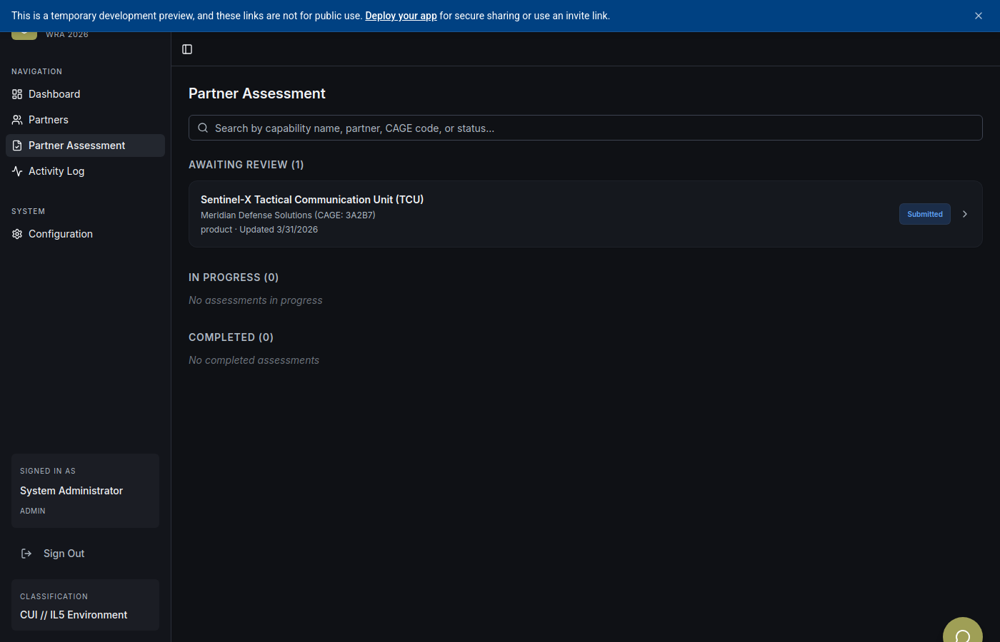
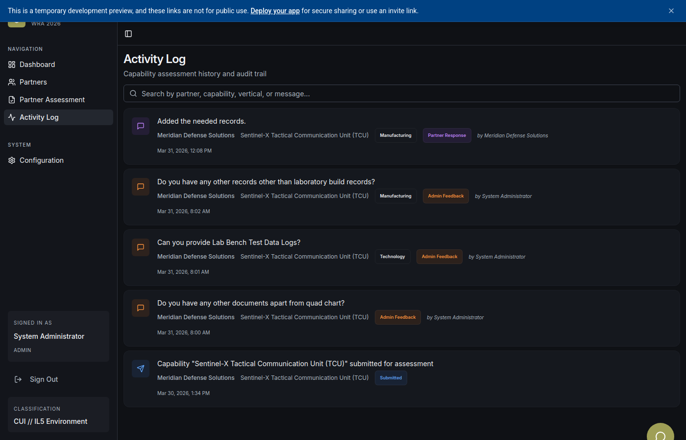
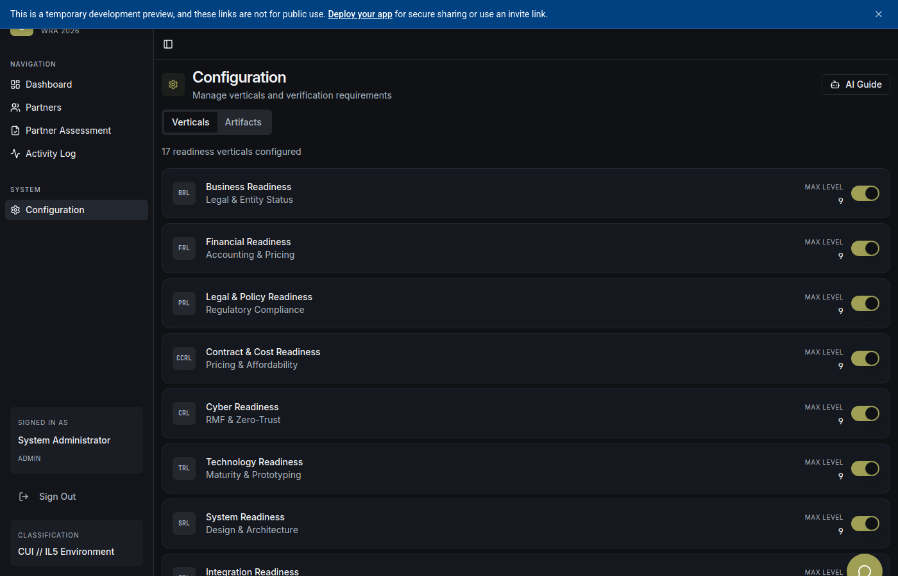

1 Logging In
Navigate to the platform URL. You will see the login screen. Enter your admin credentials:
- Username: Your assigned administrator username
- Password: Your secure admin password
Click LOGIN to access the admin dashboard. The system will authenticate your credentials and redirect you to the main dashboard.
The platform uses session-based authentication. Your session will persist until you sign out.
2 Dashboard Overview
The Dashboard is your command center. It provides a real-time overview of all partner activities and assessment metrics across the platform.

Figure 1: Admin Dashboard showing key metrics, partner summary, and recent activity
Key dashboard elements include:
- Summary Metrics: Total partners, capabilities submitted, assessments pending, and completed reviews
- Partner Status Cards: Quick-view tiles showing each partner's submission status and overall readiness
- Recent Activity Feed: Real-time log of partner actions (submissions, edits, document uploads)
The sidebar on the left provides navigation to all major sections. The CENCORE branding and classification level (CUI // IL5) are displayed at all times.
3 Partner Management
The Partners page lists all registered defense/government partners in the ecosystem. Each partner card shows company details and registration status.

Figure 2: Partner listing with company details and capability count
- Partner Cards: Display partner name, logo/image, description, and number of submitted capabilities
- Quick Actions: Click any partner card to drill into their detailed profile
- Search & Filter: Locate specific partners by name or status
4 Partner Detail View
Clicking on a partner opens the Partner Detail page. This view provides comprehensive information about a specific partner organization.

Figure 3: Partner detail view showing company profile, capabilities, and assessment status
- Company Profile: Full organizational details including POC, address, CAGE/DUNS codes
- Capabilities List: All capabilities submitted by this partner with status indicators
- Assessment History: Historical record of reviews and feedback cycles
5 Partner Assessment Review
The Partner Assessment page is the primary review workspace. Here you evaluate partner capability submissions across all 9 readiness verticals.

Figure 4: Assessment review interface showing capability selection and vertical evaluations
The assessment workflow includes:
- Capability Selection: Choose a partner and their submitted capability to review
- 9 Readiness Verticals: TRL, PRL, CRL, IRL, SCRL, TVRL, MRL, HRL, AIRL — each with maturity levels L1–L9
- Document Review: View uploaded artifacts and AI compliance scores for each vertical
- AI Compliance Scoring: Automated document analysis with policy-based scoring (0–100)
- Feedback: Provide section-level remarks, request additional evidence, or approve/reject
- Status Actions: Mark capabilities as Verified, Not Verified, or Feedback Sent
Use the "AI Score" button on individual document sections to trigger AI compliance analysis. The AI evaluates documents against DoD policy frameworks and returns a detailed score with rationale.
6 Activity Log
The Activity Log records all significant events across the platform, providing a complete audit trail.

Figure 5: Activity log showing timestamped events and actions across the platform
- Timestamped Events: Every partner action, admin review, and system event is logged
- Action Types: Submissions, status changes, document uploads, feedback responses
- User Attribution: Each event is tied to the user who performed it
- Filtering: Search by date range, action type, or partner
7 Configuration
The Configuration page allows administrators to manage platform settings including vertical configurations and assessment policies.

Figure 6: Configuration panel with vertical settings and policy management
- Vertical Management: Enable or disable specific readiness verticals (TRL, PRL, CRL, etc.)
- Policy Configuration: Manage the policy frameworks used for AI compliance scoring
- Artifact Definitions: Configure required artifacts and evidence for each maturity level
- System Settings: Manage global platform parameters
8 AI Admin Assistant
The AI Admin Assistant is available via the floating chat button (bottom-right corner) on every page. It provides on-demand help and guidance.
- Dashboard Help: Ask about metrics, trends, and what the data means
- Assessment Guidance: Get help understanding partner submissions and review workflows
- Policy Explanations: Ask about the 9 readiness verticals, maturity levels, and compliance requirements
- Preset Questions: Quick-access questions like "How does the partner assessment workflow work?" and "Explain the 9 readiness verticals"
The AI assistant is context-aware and can answer questions about specific verticals, policies, maturity levels, and assessment procedures.